力度记号与力度变化线
概述
所有力度记号都可在力度面板中找到：
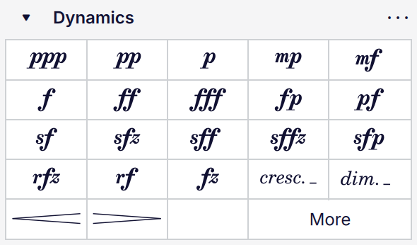
力度面板
其中包括所有标准力度记号（p、mf、ff 等），以及力度变化线形式的渐强/渐弱标记：
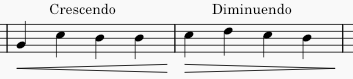
以及 cresc. 和 dim. 文本线形式，它们功能相同，但更适合较长的跨度：
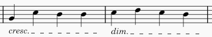
除非另有说明，本文档中凡提及力度变化线之处，同样适用于 cresc./dim. 线。
添加力度记号和力度变化线
从面板
要向乐谱添加强度记号，可以：
- 选中一个或多个音符，然后在力度面板中单击某项，或
- 将某项从力度面板拖动到音符上。
要向乐谱添加强度变化线：
- 通过以下方式选中要添加强度变化线的音符：
- 选中单个音符；此时力度变化线会一直绘制到下一个音符，或
- 选中一段音符或小节
- 通过以下方式添加强度变化线：
- 在力度面板中单击力度变化线，或
- 使用键盘快捷键 < 添加渐强力度变化线，或 > 输入渐弱力度变化线。
您也可以将力度变化线从面板直接拖动到音符上，此时它会延伸到小节末尾。
力度变化线的右端会依附到应用范围之后的第一个音符（或休止符）上，但会绘制到该音符之前结束。因此，请勿将最后一个音符包含在您选中的范围内。
从力度弹出窗口
您也可以通过力度弹出窗口添加强度记号：
- 选中一个音符
- 键入 Ctrl+D（Mac：Cmd+D）打开力度弹出窗口
- 在弹出窗口中单击一个力度记号，或直接键入（例如
pp或mf等），然后按 Esc 或单击乐谱的空白区域，此时如果文本有效，将转换为力度记号。
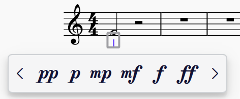
力度弹出窗口
您可以通过单击左右箭头在弹出窗口中访问更多力度记号。
选中一个力度记号时，您还可以通过拖动力度记号右侧的手柄到您希望它结束的音符或锚点上，直接从该力度记号创建力度变化线。松开后，力度弹出窗口会重新出现，您可以选择一个新的力度记号放在力度变化线的末端。如果该力度记号的级别低于起始力度记号，力度变化线将从渐强切换为渐弱。
这使得快速高效地输入一连串力度记号和力度变化线成为可能。
替换力度记号
选中一个力度记号时，您可以通过在力度面板或力度弹出窗口中单击另一个力度记号来轻松替换它。新的力度记号将替换所选的那个。
编辑力度变化线
调整力度变化线高度
力度变化线开口端底部的手柄（此处显示为选中时的灰色）可用于控制其高度：
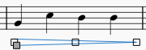
操作方法：
- 选中力度变化线
- 选中高度手柄
- 向上或向下拖动手柄，或使用 Up/Down 方向键。
您也可以通过属性面板调整高度：参见力度变化线属性。
以角度绘制
默认情况下，所有力度变化线都是水平绘制的。要以角度绘制，请首先确保在属性面板（样式选项卡中）勾选了允许斜向框。然后您就可以在垂直方向上独立移动力度变化线的起点和终点手柄。
将力度记号分配给声部
默认情况下，力度记号在输入时会被分配给乐器上的所有声部。如果您希望将所有力度记号分配给它们所应用音符的声部，可在偏好设置 -> 音符输入 -> 声部分配中将此作为选项启用：
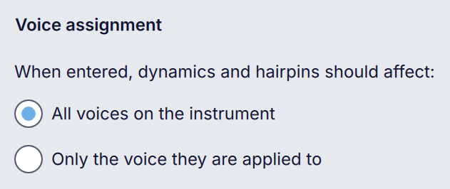
更改此偏好设置不会影响任何现有力度记号的分配。
无论此设置如何，您都可以在添加时直接将力度记号分配给特定声部：
- 在乐谱中选中一个音符或休止符
- 在按住 Ctrl（Mac：Cmd）的同时，单击力度面板中的力度记号
- 该力度记号将被分配给所选音符或休止符的声部。
（目前，从面板拖动力度记号或使用力度弹出窗口时，此方法不生效。在这些情况下，力度记号会被分配给所有声部。）
您可以通过多种方式更改现有力度记号的声部分配。首先，选中力度记号并单击属性 -> 声部分配中的某个按钮：

对于有多条谱表的乐器，单击全部按钮会打开一个菜单，其中包含针对以下内容的独立选项：
- 此乐器上的所有声部（乐器所有谱表上的所有声部）
- 仅此谱表上的所有声部（力度记号所依附谱表上的所有声部）
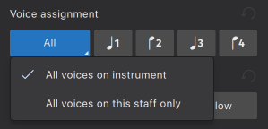
您还可以：
- 单击顶部工具栏中的某个声部按钮，以分配到声部 1–4（此方法无法选择全部），或
- 使用键盘快捷键：
- 声部 1–4：Ctrl+Alt+1–4（Mac：Cmd+Opt+1–4）
- 全部：Ctrl+Alt+0（Mac：Cmd+Opt+0）
对于有多条谱表的乐器，后一个快捷键将应用乐器上的所有声部选项。对于仅此谱表上的所有声部，请使用 Ctrl+Alt+-（Mac：Cmd+Opt+-）。
在播放中，力度记号会从其出现的位置起，作用于所分配的声部，直到遇到同一声部中的另一个力度记号，或影响所有声部的力度记号为止。
请参阅力度播放兼容性，了解声部分配功能在不同声音技术下的表现。
定位力度记号和力度变化线
在 格式 → 样式 → 力度与力度变化线 → 力度记号和力度变化线的默认位置 中有三个选项，控制力度的整体定位：
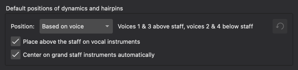
- 位置决定力度记号是根据其声部分配来定位（“基于声部”，默认），还是全部位于“上方”或“下方”
- 在人声乐器上放置在谱表上方指定在人声谱表上力度记号是否应位于谱表上方（默认开启）
- 在大谱表乐器上自动居中会自动将力度记号在多谱表乐器的谱表之间垂直居中（默认开启）。
基于声部的定位
如果选择了基于声部的位置，声部分配将如下影响力度记号的默认位置：
- 声部 1 的力度记号，如果该节奏位置只有一个声部，则位于谱表下方，否则位于上方
- 声部 3 的力度记号位于谱表上方
- 声部 2 和声部 4 的力度记号位于谱表下方
- 分配给所有声部的力度记号位于谱表下方
任何力度记号的位置都可以通过属性 → 位置显式覆盖。
如果启用了在人声乐器上放置在谱表上方，那么在人声谱表上，分配给声部 1 的力度记号将位于谱表上方，分配给该谱表上所有声部的力度记号也位于谱表上方。声部 2 和声部 4 的力度记号仍位于下方。
在谱表之间居中力度记号
大谱表乐器（例如键盘、键盘打击乐、竖琴）上的力度记号可以在谱表之间垂直居中。
如果开启了在大谱表谱表上自动居中选项：
默认情况下，力度记号会在以下情况下自动居中（即当：
- 力度记号的上方或下方（根据其相对于所依附谱表的位置）存在同一乐器上可与之居中对齐的谱表
- 属性 -> 声部分配设置为乐器上的所有声部
- 属性 -> 在谱表之间居中设置为自动
- 在 格式 -> 样式 -> 力度与力度变化线 中，在大谱表乐器上自动居中选项开启
- 未对力度记号应用手动 Y 偏移。
您也可以通过将在谱表之间居中设置为开，并根据您要居中到的谱表在上方还是下方来配置位置，从而手动居中力度记号。
避开小节线
力度记号居中于其所依附的音符或休止符下方。对于 ppp 这类较长的力度记号，当有与下方谱表相连的小节线时，它们很容易与其前后的小节线发生碰撞。默认情况下，力度项目会向左或向右偏移以避开这些碰撞。此行为可以全局关闭（格式 -> 样式 -> 力度与力度变化线 -> 避开小节线），或通过属性面板对特定项目关闭。
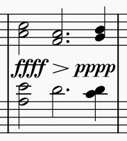
避开小节线开启

避开小节线关闭
第二张图显示了关闭此选项但开启文本遮罩（格式 -> 样式 -> 小节线 -> 用相交文本遮罩小节线）时的结果。如果此选项也关闭，小节线将绘制在力度记号之上。
如果力度记号前后键入了附加文本，该文本也会被纳入避开小节线的范围。详情参见作为力度项目一部分的文本。
移动力度记号和力度变化线
力度记号以及力度变化线的端点不必只依附于音符或休止符，也可以移动到较长时值内的节奏位置。参见锚点，另请参阅更改线条的范围。
如果力度记号在一侧或两侧吸附了力度变化线，这些力度变化线的端点会随力度记号移动。参见吸附与对齐。
吸附与对齐
如果一段表情文本与力度记号处于相同位置，且具有相同的声部分配和相同的位置设置（上方/下方），这两个项目将吸附在一起，表情文本位于力度记号之后。如果任一项目移动，另一个也会跟随。
要将表情文本与力度记号解耦：
- 选中文本
- 转到属性面板
- 在表情下，取消勾选与前面的力度记号对齐。
然后您就可以独立移动这两个项目了。
如果您想完全禁用此吸附行为，请取消勾选格式 -> 样式 -> 表情文本 -> 吸附到力度记号。
如果力度变化线在与力度记号相同的位置开始和/或结束，且具有相同的声部分配和相同的位置设置（上方/下方），力度变化线将自动与任一端的一个或多个力度记号垂直对齐。
要为特定力度变化线禁用此行为：
- 选中力度变化线
- 转到属性面板
- 在表情下的位置选项卡中，取消勾选吸附到前一个（禁用与力度变化线开头任何力度记号的对齐）和/或吸附到下一个（禁用与末尾任何力度记号的对齐）。
将已吸附或已对齐项目的位置翻转到谱表的另一侧，或更改任一项目的声部分配，将自动停止其吸附或对齐。
组合力度与文本
有两种方法可以组合力度和文本，它们之间存在细微但重要的差异。
力度与表情文本
当力度记号后跟表情标记时，例如 p dolce 或 f espress.，最好将力度记号和表情文本作为单独的项目输入。两者会自动吸附在一起（参见吸附与对齐）。
以这种方式向力度记号添加表情文本的最快方法是：
- 通过任意方法在乐谱中输入一个力度记号（输入后力度记号会被选中）
- 单击文本面板中的表情项，这会在力度记号之后添加一段表情文本
- 根据需要编辑表情文本（假设文本已被选中——输入后确实会被选中，只需按 Enter 进入编辑模式）。
您也可以反过来输入（先表情，后力度），不过表情文本仍会被放置在力度记号之后。
cresc./dim. 文本线可以完全相同的方式添加到力度记号上，并且会像力度变化线一样吸附到力度记号。
作为力度项目一部分的文本
如果文本是力度短语的一部分，例如 più p 或 f sub.，通常最好将这些文本直接键入力度记号中，以便将其视为单个项目。这也是将文本放在力度记号之前的唯一方法，因为表情项目在吸附时总是被放置在力度记号之后。
- 双击力度记号，或选中它并按 Enter，进入编辑模式
- 使用光标键移动到项目的开头或结尾（如有必要）
- 键入文本。
键入力度项目中的任何文本都会以表情文本样式显示，并独立于力度符号进行缩放。
当开启避开小节线时，这适用于力度项目的整体，包括键入项目本身的任何文本。它不适用于可能吸附到小节线上的任何表情项目。请考虑这两个示例之间的区别：
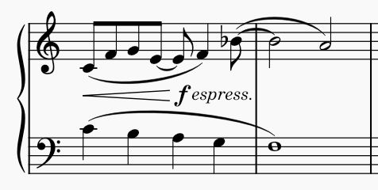
在其后键入文本的力度记号
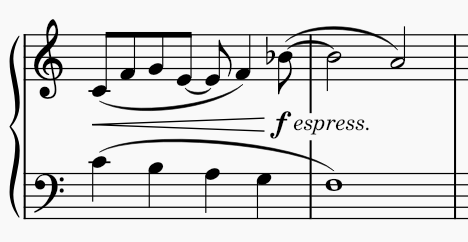
带有独立表情项目的力度记号
在前一种情况下，避开小节线会将文本推向左侧，力度记号看起来像是比预期更早生效。这就是为什么通常更倾向于使用单独的表情文本，而不是直接在力度记号之后添加文本的原因之一。
当力度项目包含文本时，您还可以选择力度记号是否保持居中于音符下方、文本向左右延伸（这是默认设置），还是整个项目居中。这些选项可在属性面板的力度部分下显示更多中找到：
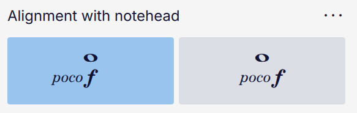
图标说明了这两个选项之间的区别。当力度记号附有一段表情文本时，此设置无效。
属性
单个力度记号和力度变化线可通过属性面板编辑。要编辑乐谱范围的设置，请参见样式。
力度属性
对于力度记号，提供以下选项：
- 缩放：力度符号的大小，以相对于默认值的百分比表示
- 避开小节线：力度记号是否应自动向左或向右偏移，以避开与小节线的碰撞（参见避开小节线）
- 声部分配：所选力度记号分配给哪个声部；这会影响其位置以及播放；默认是全部（参见将力度记号分配给声部）
- 位置：力度记号应位于谱表上方还是下方；默认的自动表示位置由声部分配决定
- 在谱表之间居中：在有多条谱表的乐器上，是否将力度记号在其所依附谱表和下一条谱表之间居中；默认的自动表示由声部分配决定（如果声部设置为乐器上的所有声部以外的任何值，力度记号将不居中）
在显示更多下：
- 与符头对齐：如何对齐包含附加文本的力度项目；详情参见作为力度项目一部分的文本
- 边框：允许您在项目周围绘制方形或圆形边框。如果选择其中任一，将出现通常的附加边框设置。
如果力度项目键入了附加文本，还会有一个文本标题，其中包含通常的文本属性（字体、样式、大小等）。这些设置只影响文本，不影响任何力度符号。
力度变化线属性
对于力度变化线，提供以下选项：
位置
- 声部分配：所选力度记号分配给哪个声部；这会影响其位置以及播放；默认是全部（参见下文将力度记号分配给声部）
- 位置：力度记号应位于谱表上方还是下方；默认的自动表示位置由声部分配决定
- 与相邻力度记号的对齐
- 吸附到前一个：如果勾选，那么如果力度变化线开头有力度记号且声部分配相同，力度变化线将紧接在该力度记号（及其吸附的任何表情文本）之后开始绘制，并与之垂直对齐
- 吸附到下一个：如果勾选，那么如果力度变化线末尾有力度记号且声部分配相同，力度变化线将绘制到该力度记号之前结束，并与之垂直对齐。
样式
这些选项专门针对力度变化线。对于 cresc./dim. 线，选项与其他文本线相同：参见线条属性。
- 无声圆：在力度变化线的尖端绘制一个小圆圈，以表示 niente（从无到有或从有到无）
- 允许斜向：允许力度变化线倾斜（参见以角度绘制）
- 粗细：线条的粗细
- 高度：力度变化线开口端的高度（参见调整力度变化线高度）
- 高度（新系统）：当力度变化线跨越系统分隔时，在新系统开头开口的高度。
文本
这些设置与文本线相同：参见线条属性。
样式
参见主章节模板和样式
格式 -> 样式 -> 力度与力度变化线 包含力度记号和力度变化线的默认定位、间距和外观选项。
您可以在 格式 → 样式 → 文本样式 → 表情 中编辑表情文本样式（它会影响表情文本项目，也会影响键入力度项目中的任何普通文本）。
力度记号和力度变化线的默认位置
参见定位力度记号和力度变化线。
力度
- 覆盖乐谱字体：力度记号通常取自音乐字体（在 格式 -> 样式 -> 乐谱 -> 音乐符号字体 中指定）。如果您想仅为力度记号使用不同的字体，请勾选此框，然后从字体下拉菜单中选择所需字体
- 避开小节线：默认情况下是否偏移所有力度记号以避开小节线（参见避开小节线）
- 缩放：力度符号的大小，以相对于默认值的百分比表示
- 上方/下方偏移：力度记号在谱表上方和下方的默认垂直位置
- 自动放置最小距离：力度记号与谱表之间，或与它和谱表之间项目的最小距离。
虽然力度记号看起来像文本，并且经常与文本一起使用，但最好将它们视为与其他音乐符号（谱号、符头等）一样的音乐符号，在任何给定的音乐字体中，它们都按与字体中其他符号相适应的特定尺寸设计。这就是为什么缩放设置不以点为单位表示，而以百分比表示，其中 100% 代表“它们被设计时的尺寸”。
力度变化线
- 上方/下方偏移：力度变化线在谱表上方和下方的默认垂直位置
- 高度：力度变化线开口端的默认高度
- 继续高度：当力度变化线跨越系统分隔时，新系统开头开口的默认高度
- 自动放置、到力度记号的距离：力度变化线末端与力度记号之间的距离
- 线粗细：默认线粗细。
力度播放兼容性
声部特定力度的支持因所选声音技术（例如 SoundFont、VST 或 Muse Sounds）以及乐器是单音符力度乐器（即能够在单个音符上改变力度的乐器，如小提琴或长笛）还是非单音符力度乐器（例如钢琴或打击乐器，这些乐器在音符初始起音后力度属性开始衰减）而异。
在下表中，单音符力度乐器称为SND 乐器，而非单音符力度乐器称为非 SND 乐器。
| 声音技术 | 对单个声部/谱表的支持 |
|---|---|
| Muse Sounds | 完全支持按声部和按谱表的力度。 |
| SoundFont (MS Basic) | SND 和非 SND 乐器均支持单个声部的力度。只有非 SND 乐器支持单个谱表的力度。 |
| VST | 只有非 SND 乐器支持按声部和按谱表的力度。 |